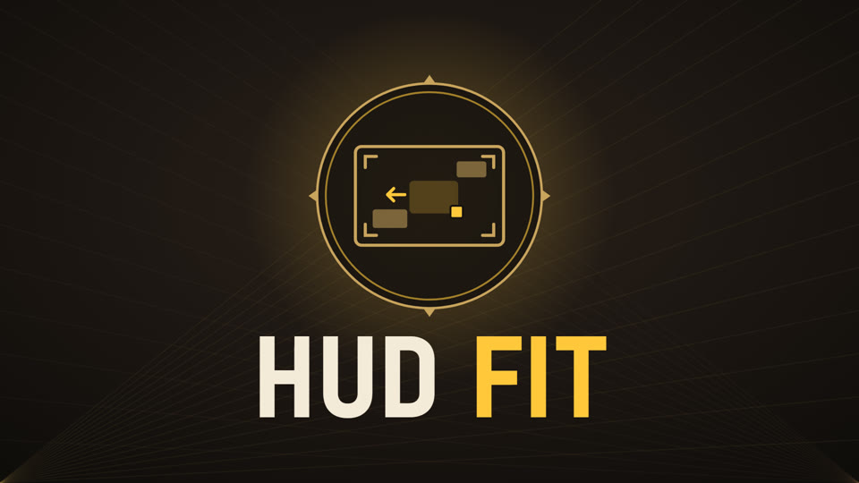

HUD Fit
Move, resize and de-stretch every HUD element, live in game.
Download HUD Fit 1.1Details
Rearrange your HUD, live, in game
HUD Fit is an in-game editor for the Deadlock HUD: click any element, drag it, resize it, hide it. Built for 4:3 stretched players (de-stretch the HUD so it stops looking wide), useful on any resolution.Open it: Esc → HUD Fit (under Settings). Best in Explore NYC or a sandbox / Hero Testing match — the hideout hides most of the HUD.
Features
- Click, drag, resize any of 22 HUD elements on the real HUD — health bar, abilities, items & souls, weapon/spirit/vitality, minimap, top bar, crosshair & ammo, kill feed, chat, prompts, buffs, damage meter and more
- Snapping to screen edges, the centre and other elements; W A S D nudge (Shift = 10 px), + / − size
- Center buttons: put the crosshair or any element exactly in the middle of the screen
- Layers panel: show/hide each element in game, lock it, reset it with one click
- 4:3 stretch fix: de-stretch chosen elements or everything (4:3, 5:4, 16:10 presets)
- Scale all items: make the whole HUD bigger or smaller — every element stays at its screen edge
- Fixes the health bar disappearing at 4:3 (the stock layout only fits 16:9 and wider)
- Test tab: one-click sandbox situations (damage, low health, death/respawn timer, level up, souls, buffs, enemy bot, trooper wave, DPS meter) so you see the real UI while arranging it
- Layouts: Default, Clean and up to 20 named layouts — export / import a layout code to share it
- Filters with a strength slider: Monochrome, Sepia, Neon, Ice, Ghost, Focus, Muted
- Everything is saved on your PC and comes back after a restart
Install
- Install with Deadlock Mod Manager, or copy the VPK into game/citadel/addons as the next free pakNN_dir.vpk
- Made to be used together with 4:3 Video (adds a 4x3 aspect ratio option to the video settings)
Compatibility
- Works with Hero Select Plus and 4:3 Video
- Conflicts with other mods that replace base_hud or hud_escape_menu, and with full HUD overhauls
- After a big game update, if the HUD looks wrong, disable the mod until an updated build is posted